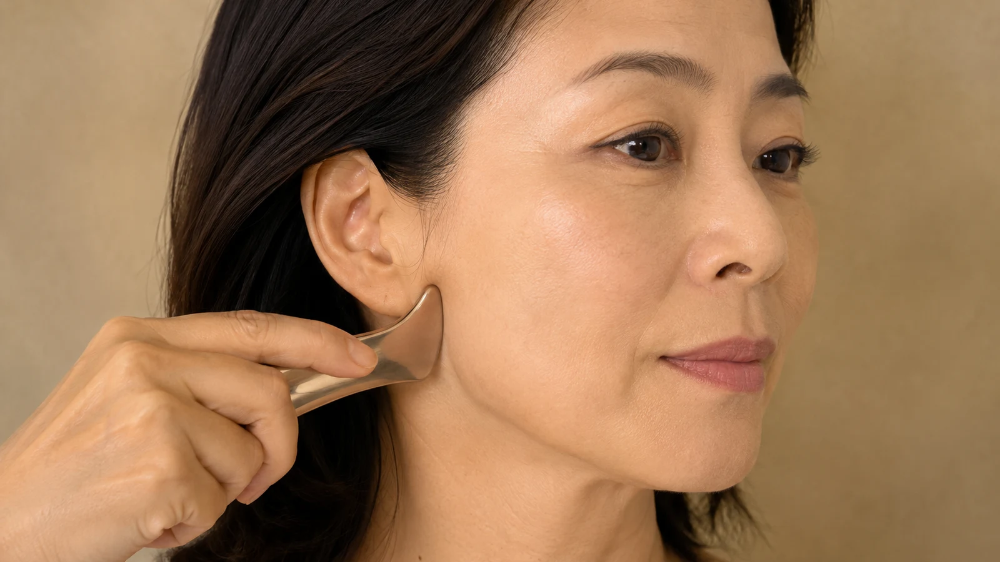

The Bojin Journal · Jaw & Chin
Jowls Along Your Jawline? What Causes Them and What Helps

A student pointed at the soft little pouches at the sides of her jaw and said, “I used to have one clean line here.” She wasn’t imagining it. Jowls are when the jawline stops being one crisp edge and starts having two soft corners.
Jowls form when the soft tissue of the lower cheek slips down and gathers at the sides of the jaw, as the support holding it in place loosens with age. That loosening is structure; no cream or home tool rebuilds it. Gentle self-care along the jawbone, about twice a week and about a minute per side, can ease the tension on top so the jaw looks a little cleaner and feels less heavy for a while. This is self-care, not medical care.
The hammock, and its anchors
Picture the soft tissue of your lower cheek as a hammock. It hangs between two anchor points: up near the cheekbone, and down along the jaw. When both hold firm, the hammock stays taut and your jaw reads as a single line. Over the years the upper anchor loosens, the tissue slides down the jawbone, and it bunches at the sides where the jaw turns up toward the ear. That bunching is the jowl.
Some of that is structure you can’t reverse by hand. But part of the heavy, dragging feeling is tension along the jaw, especially if you clench, and that part you can ease. That’s why honest self-care works on the jaw itself, not on the soft pouch.
Jowls, double chin or marionette lines?
All three live on the lower face, and they often get lumped together:
| What you see | Where it sits | Read more |
|---|---|---|
| Soft pouches at the sides of the jaw | Along the jawline, toward the corners | This guide |
| Fullness under the chin | Center, under the chin | Softer jawline and double chin |
| Lines running down from the mouth corners | Beside the mouth and chin | Mouth corners turning down |
| Bumpy, orange-peel chin | The point of the chin | Pebble chin |
Habits that make jowls look heavier
- Chin down at a phone. Hours with your chin tucked fold the lower face forward. Lift the screen to eye level.
- Clenching your jaw. A tense jaw holds the lower face tight and heavy. At rest, your back teeth shouldn’t touch.
- Sleeping with one cheek pressed into the pillow. If one side looks heavier, notice which side you sleep on.
- Big weight swings. Losing and regaining weight can leave the lower face looking softer. Steadier is kinder to your skin.

A 10-second jawline check
- Compare the two sides. Look straight ahead in even light. Is one corner of the jaw softer or heavier than the other?
- Tilt your head back a little. If the pouches flatten when you look up, that’s soft tissue settling, which is common with age. If you feel a firm lump that doesn’t move, or anything tender or new, show it to your doctor.
One honest note: fingertips and most home tools mostly move the top layer of skin, a millimeter or two deep. In my classes, tension along the jaw is often connected to the chewing muscles and the sides of the head. That’s why the full method works in a set order, not by rubbing one pouch longer.
What can help, honestly
| Approach | What it works on | What to expect |
|---|---|---|
| Firming creams | The skin surface | Softer-feeling skin; it won’t move tissue that has slipped |
| Gentle self-care along the jawbone | Tension along the jaw | A slightly cleaner, lighter-feeling jawline for a while; about twice a week |
| Changing the habits above | Posture and clenching | Less tension over time; costs nothing |
| A dermatologist or plastic surgeon | The structure itself | A professional assessment of what’s right for you |
One gentle line tonight
Work the bone, not the pouch. Trace the lower edge of your jawbone with a fingertip: the line of bone that runs from your chin back toward your ear. Press just enough to feel the bone; it should never hurt. With a little cream, glide lightly along that edge, from beside the chin to the soft hollow just behind your earlobe. About a minute per side. Never drag the skin upward to try to force a change.
“At first, almost no one can find the bone edge. They work in the wrong spot, because they’re afraid to press.”Yu-Ting Lan, on new students
See this line drawn on a face, with its start and end points, on the Jaw & Chin guide. It’s one line of a longer routine; the full method works the face in a set order.
Honest expectations, and a safety note
Done about twice a week, this can make the jawline look a touch cleaner and feel less heavy, gently and for a while. It won’t restore the support that time loosened, and I’d be selling you something if I said it could. If jowls bother you enough to weigh a procedure, self-care can sit alongside that conversation with a professional, not replace it.
Quick answers
What causes jowls?
Over the years, the support that holds the soft tissue of the lower cheek in place loosens, the skin loses some firmness, and that tissue slips down and gathers at the sides of the jaw. Genetics and weight changes play a part too.
Are jowls the same as a double chin?
No. A double chin sits under the chin, in the center. Jowls sit at the sides, along the jawline, where the cheek's soft tissue has slipped past the jawbone. Different spots, different work.
Can bojin lift jowls?
No. It can't rebuild support that loosened over years. It can ease tension along the jaw, so the jawline looks a little cleaner and feels less heavy for a while. If jowls bother you enough to consider a procedure, talk to a dermatologist or plastic surgeon.
How often should I practice?
About twice a week, about a minute per side, with light pressure along the bone. Never drag the skin upward to try to force a change.
Does looking down at my phone make jowls worse?
Hours with your chin tucked toward your chest fold the lower face forward and can make the jawline look softer while you're in that position. Lifting the screen to eye level is an easy habit to change.
Find out where your jaw holds the most
The 1-minute Face Tension Profile checks five areas of your face and neck, including the jaw, and shows your result on screen. No email needed. If you want to see the method’s pace first, the free 1:18 demo shows Yu-Ting working above the brow.
Take the 1-minute Face Tension ProfilePart of the Jaw & Chin guide: a 10-second check, the starting route, and related guides for this area.
Yu-Ting Lan is a Taiwan-based international bojin instructor and the founder of Héhé Studio. She has taught her bojin method to more than a thousand students, from complete beginners to grandmothers, across Taiwan, Hong Kong and Malaysia.